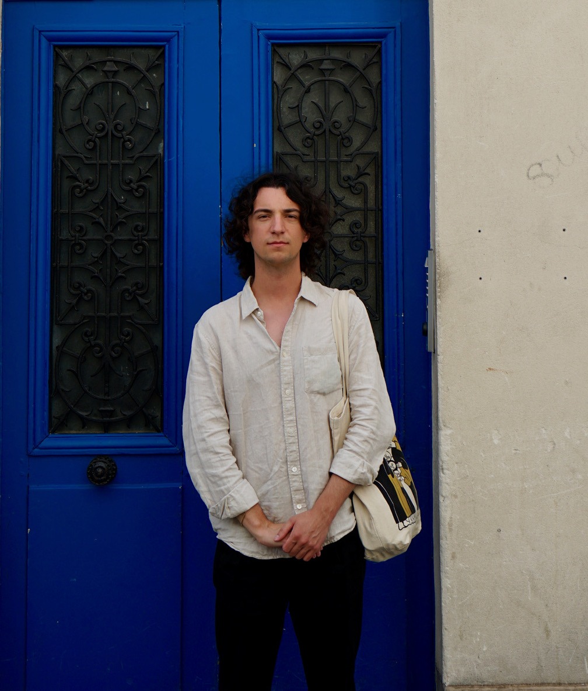
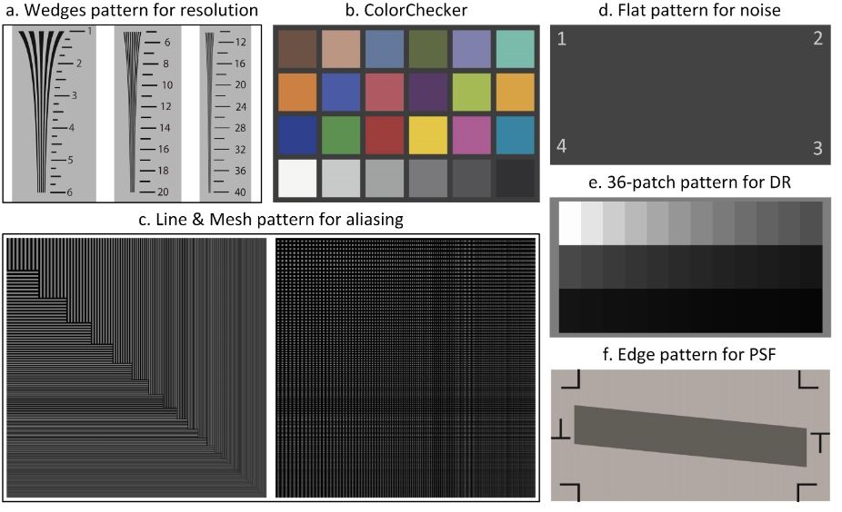
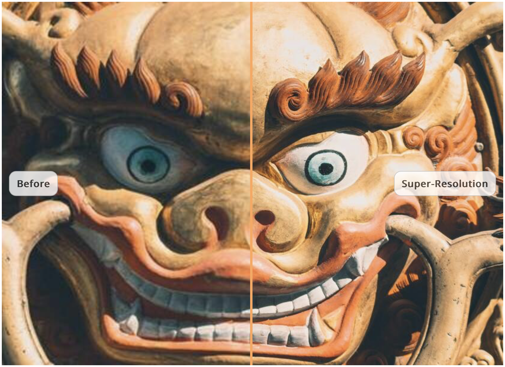
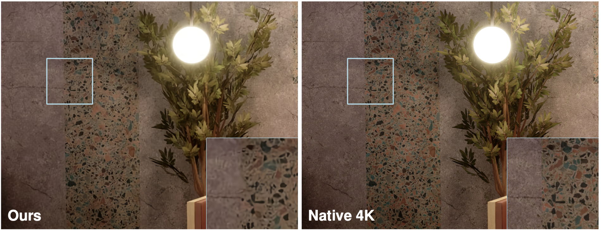

|
I am pursuing a PhD in Computer Science at the University of Wurzburg under the supervision of Prof. Radu Timofte. I studied Computational Engineering at TU Darmstadt. There, I was a student research assistant at the Visual Inference Lab led by Prof. Stefan Roth. Prior to that, I received a Bachelor in Mechanical Engineering with a focus on mechatronics and automotive engineering from TU Darmstadt. Email / Twitter / Google Scholar / LinkedIn |
 |
{kind=link}
|
My research centers on addressing low-level vision problems and achieving efficient, photorealistic fusion of synthetic and real-world environments. |
|  |
Zilin Fang, Andrey Ignatov, Eduard Zamfir, Radu Timofte ICCV 2023 Paper / Code |
|  |
Marcos V. Conde, Eduard Zamfir, Radu Timofte CVPRW 2023 Paper / Code |
|  |
Eduard Zamfir, Marcos V. Conde, Radu Timofte CVPRW 2023 Paper / Code |

|
Sherwin Bahmani*, Oliver Hahn*, Eduard Zamfir*, Nikita Araslanov, Daniel Cremers, Stefan Roth TMLR 2023 Paper / Code |
|
|
|
Website source code by Jon Barron. |